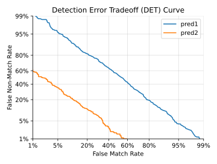

detection_error_tradeoff()¶
- audplot.detection_error_tradeoff(x, y, *, error_rates=False, xlim=[0.001, 0.5], ylim=[0.001, 0.5], label=None, ax=None)[source]¶
Detection error tradeoff curve.
A detection error tradeoff (DET) curve is a graphical plot of error rates for binary classification systems, plotting the false non-match rate (FNMR) against the false match rate (FMR).
You can provide truth and prediction values as input or you can directly provide FMR and FNMR, which can be calculated using
audmetric.detection_error_tradeoff().The axes of the plot are scaled non-linearly by their standard normal deviates. This means you have to scale every value by this transformation when you would like to change ticks positions or axis limits afterwards. The scaling is performed by
scipy.special.ndtri()ifscipyis installed, otherwiseaudmath.inverse_normal_distribution()is used, which is slower for large input arrays.- Parameters
x (
Union[Sequence,Series]) – truth values or false match rate (FMR)y (
Union[Sequence,Series]) – predicted values or false non-match rate (FNMR)error_rates (
bool) – ifFalseit expects truth values asx, and prediction values asy. IfTrueit expects FMR asx, and FNMR asyxlim (
Sequence) – x-axis limits with \(x \in ]0, 1[\)ylim (
Sequence) – y-axis limits with \(y \in ]0, 1[\)label (
Optional[str]) – label to be shown in the legend. The legend will not be shown automaticallyax (
Optional[Axes]) – pre-existing axes for the plot. Otherwise, callsmatplotlib.pyplot.gca()internally
- Return type
- Returns
function to transform input values to standard normal derivate scale
Examples
>>> truth = np.array([1] * 1000 + [0] * 1000) >>> # Random prediction >>> pred1 = np.random.random_sample(2000) >>> # Better than random prediction >>> pred2 = np.zeros( ... 2000, ... ) >>> pred2[:1000] = np.random.normal(loc=0.6, scale=0.1, size=1000) >>> pred2[1000:] = np.random.normal(loc=0.4, scale=0.1, size=1000) >>> pred2 = np.clip(pred2, 0, 1) >>> transform = detection_error_tradeoff( ... truth, ... pred1, ... xlim=[0.01, 0.99], # use large limits for random ... ylim=[0.01, 0.99], ... label="pred1", ... ) >>> # Add pred2 to plot using transformed FMR and FNMR values >>> import audmetric >>> fmr, fnmr, _ = audmetric.detection_error_tradeoff(truth, pred2) >>> _ = plt.plot(transform(fmr), transform(fnmr), label="pred2") >>> _ = plt.legend() >>> plt.tight_layout()
